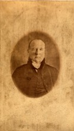

Beaubien-Perrault-Benington - Person Sheet
Beaubien-Perrault-Benington - Person Sheet

Birth2 Mar 1780, Fort Hunter, New York, USA
Death14 Jul 1853, Québec, Québec
Occupationavocat, juge, procureur-general44
FatherRev. John Stuart (1740-1811)
MotherJane Okill (1747-1821)
Spouses
ChildrenJames (ca1810-1835)
Birth31 Jan 1795, Montréal, Québec9
Burial24 Aug 1849, Québec, Québec
FatherAlexander Robertson
MotherMary [Robertson]
ChildrenCharles James (1824-1901)
Mary Catherine (1828-1901)
Edward Andrew (1832-1903)
James (1837-1915)
Unmarried
ChildrenEleanore (1810-)
William James (1819-)
Notes for Sir James Stuart
Follow up on children
[LBP] Sir James Stuart fut délégué en Angleterre en 1822 pour plaider la cause de l'union du Haut et Bas Canada. Procureur-général (1825), MPP pour Sorel; conseiller exécutif honoraire (1829); suspendu comme procureur général par Lord Aylmer (1831); offert position de Juge en chef pour Terreneuve, mais refusé; nommé Juge en chef du Bas Canada par Durham (1838)
[DBC] Lawyer, office holder, politician and judge. Completed his eminently conservative and Protestant schooling at King's College, Windsor, NS and at age 14 began articling with John Reid, clerk of the Court of King's Bench in Montréal, then two years in Québec with Jonathan Sewell, then attorney general. He was called to the bar in 1801.
Robert Shore Milnes, the lieutenant governor, made him his secretary, which led to his being appointed solicitor general in 1805, at age 25. He entered the House of Assembly as member for Montréal East in 1808. He was passed over as replacement for Sewell as attorney- general in Sept 1808 when Craig named Edward Bowen. Stuart, a man of arrogant and choleric temperament, confident of his own abilities and sensitive to slights, showed his resentment of Craig's action. Craig accused him of neglecting the social obligation of paying his respects to the governor and of not asking the governor if he had any business he wanted introduced in the house. He was dismissed as solicitor general in 1809 and replaced by Stephen Sewell, Jonathan's brother. He then lost the next election to Stephen Sewell.
Stuart harbored a fierce sense of grievance towards Jonathan Sewell. Elected in Montréal in 1811, he acquired the rather uncharacteristic role of leader of the Canadian party, rallying in it an attack on Sewell and James Monk, chief justice of the Court of King's Bench in Montréal. He seized upon recently promulgated rules of practice for the courts and claimed that the judges had by changing these rules, arbitrarily usurped functions of the legislature. He demanded an inquiry and was made president of the special committee and author of its report in Feb 1814.
His report shows a mixture of ability and unscrupulousness. He pinpointed a grave problem implicit in dispensing French civil law in British courts: judicial practice in a system of judge-made law was alien to the spirit underlying French civil law and the judges were in fact usurping a function which, in the French legal system, belonged to the legislature. However, he threw in quite a few specious arguments and couched the report in exaggerated and violent language that caused it to be dismissed by his contemporaries and later by historians such as Chapais. He refused to acknowledge the judges' good intentions or to propose a workable alternative. In fact, when in 1850, as chief justice, he revised the rules of practice, he maintained intact several of the very ones he had earlier attacked.
The heads of impeachment against Sewell finally adopted by the assembly included, in addition to the specifically legal charges, a variety of political charges, including that he had caused the governor to remove some of his political opponents and that he had helped the advancement of his brother. Many observers agreed that Stuart was motivated by personal animosity, but he still became one of the foremost leaders of the Canadian party from 1813-7, during which he relentlessly kept alive the issue of impeachment of the two justices. The justices were ultimately exonerated by the Privy Council in 1816.
In the 1820s, he became a leader of the movement to reunite the two provinces, now supporting the British party. He was sent to London in 1823 to argue the cause, and stressed not only the economic benefits but also the necessity to assimilate the French Canadians.
He impressed the colonial officials sufficiently that he was named to the post of attorney general for Lower Canada in 1825. Gov. Dalhousie convinced him to run for election to represent the executive in the lower house. He sat for the riding of William Henry 1825-7, where the contradictions between his current and prior positions were constantly pointed out by the Patriotes. Papineau's correspondance suggests that Stuart was frequently red with ill- suppressed rage and "overwhelmed with vexations and humiliations" by his former associates. In recognition of his services, he was named to the Executive Council in 1827, a post he held till Union in 1841. He was defeated in the lower house by Wolfred Nelson in 1827.
As attorney general, he elaborated the government's case against the Seminaire de St-Sulpice, arguing that it had no legal existence and hence no right to its property, most of Montréal island which, in his view, belonged to the crown. He opposed the rights of seigneurial tenure and argued against granting a petition by JBR Hertel de Rouville for a new seigneury.
His arrogance and his role as a pillar of the British party made him the target of a series of accusations by the assembly culminating in demand for his dismissal. The charges revolved around conflicts of interest. Gov Aylmer had no choice but to suspend Stuart and refer the charges to London. Stuart then challenged Aylmer to a duel and demanded compensation for loss of income. He spent three years in London defending himself. The assembly sent DB Viger to present the case. Goderich, the colonial secretary, agreed with some of the charges and Stuart was dismissed in Nov 1832. He appealed to Goderich's successor, Stanley, who, sympathetic but unwilling to reverse Goderich's decision, offered him the chief justiceship of Newfoundland, which he declined, insisting on financial compensation. Neither Stanley nor his successor, Spring-Rice, were willing to concede, and Stuart returned to private practice in 1834, without public exoneration.
His practice was lucrative and included clients such as Lord Selkirk and the HBC.
In April 1838, the winds changed and Gov Colborne named him to the Special Council. Two months later, Lord Durham dismissed the council's members but named Stuart as Jonathan Sewell's successor as chief justice. He was reappointed to the Special Council on Durham's departure in 1839 and served as its president until 1841. He was created a baronet on 5-5-1841. As a member of the Special Council, he voted in favor of Union and is said to have drafted the legislation.
Although he was respected for his legal talent, his personality was unendearing. Preoccupied with personal advancement, Stuart lacked both the attractive character and the diversity of interests that distinguished his brother Andrew and the literary ability and statesmanlike breadth of vision shown by his long-time rival Jonathan Sewell.
9 He was apparently married twice, as a son James, a barrister, died in Quebec 24 7 1835 at age 25. Witnesses to the marriage in Christ Church Montreal were Michael O’Sullivan and Francis desrivieres, step-son of James McGill.
1506 Fought a duel with Samuel Gale in 1819. Tried to fight one with Lord Aylmer, the Governor-General, whom he felt had not supported him when he was dismissed as solicitor general, but Aylmer declined due to his office.
22 Né à Fort Hunter, dans la colonie de New York, le 2 mars 1780, fils de John Stuart, loyaliste et ministre de l'Église d'Angleterre, et de Jane Okill.
Reçut la dernière partie de son éducation traditionaliste et protestante au King's College de Windsor, en Nouvelle-Écosse. Fit son apprentissage du droit dans le
Bas-Canada: d'abord à Montréal, de 1794 à 1798, puis auprès de Jonathan Sewell, à Québec, de 1798 à 1800. Admis au barreau en 1801.
Fut secrétaire particulier du lieutenant-gouverneur Robert Shore Milnes avant d'être nommé solliciteur général du Bas-Canada en 1805; démis de cette dernière
fonction par le gouverneur James Henry Craig, en mai 1809.
Élu sans opposition député de Montréal-Est en 1808. Réélu en 1809. Appuya le parti canadien. Défait en 1810. Élu dans Montréal à une élection partielle le 5
décembre 1811; devint le leader du parti canadien en Chambre. Réélu dans Montréal et élu dans Buckingham en 1814; opta pour Montréal le 6 février 1815. Réélu
dans Montréal en 1816. Par suite du refus de l'Assemblée, en 1817, d'appuyer une proposition qui ranimait la question des mises en accusation contre les juges
Jonathan Sewell et James Monk, cessa de siéger. Ne s'est pas représenté ou a été défait, selon les sources, en avril 1820.
Nommé procureur général du Bas-Canada le 31 janvier 1825. Élu député de William Henry à une élection partielle le 22 février 1825; appuya le parti des
bureaucrates. Défait en 1827. Ne s'est pas représenté en 1830. Nommé membre du Conseil exécutif le 6 juillet 1827; en fit partie jusqu'à l'entrée en vigueur de
l'Acte d'Union, le 10 février 1841. À la suite d'une requête de l'Assemblée, en date du 19 mars 1831, fut suspendu de ses fonctions de procureur général le 9
septembre 1831, puis destitué en novembre 1832. Ayant refusé le poste de juge en chef de Terre-Neuve, retourna à l'exercice du droit. Nommé membre du Conseil
spécial le 2 avril 1838, fut révoqué au moment de la dissolution de ce conseil, en juin. Fait juge en chef du Bas-Canada le 22 octobre 1838; le demeura jusqu'à sa
mort. Appelé à nouveau au Conseil spécial, le 11 novembre 1839; en fut membre et président jusqu'à l'entrée en vigueur de l'Acte d'Union, le 10 février 1841.
Est l'auteur de: Observations on the proposed union of the provinces of Upper and Lower Canada, under one legislature, respectfully submitted to his majesty's
government, by the agent of the petitioners for that measure (Londres, 1824); <Remarks on a plan, entitled "A plan for a general legislative union of the British
provinces in North America">, paru dans General union of all the British provinces of North America (Londres, 1824). Rédigea le texte de la loi sur l'union des
deux Canadas et celui de l'ordonnance qui créait les bureaux d'enregistrement. Fait baronnet (sir) le 5 mai 1841.
Décédé à Québec, le 14 juillet 1853, à l'âge de 73 ans et 4 mois. Après des obsèques célébrées dans la cathédrale anglicane Holy Trinity, le 16 juillet 1853, fut
inhumé dans le cimetière St. Matthew.
Avait épousé dans l'église anglicane Christ Church, à Montréal, le 14 mars 1818, Elizabeth Robertson, [fille d'Alexander Robertson et de sa femme Mary].
Frère d'Andrew Stuart. Oncle de George Okill Stuart. Grand-oncle de Cedric-Lemoine Cotton.
No marriage to a first wife or first child found 1808-1812, incl browsing Christ Church Montreal records [130817]
partner of Alexander Buchanan, who had articled sith Hon Andrew
http://www.biographi.ca/en/bio/buchanan_alexander_8E.html
[LBP] Sir James Stuart fut délégué en Angleterre en 1822 pour plaider la cause de l'union du Haut et Bas Canada. Procureur-général (1825), MPP pour Sorel; conseiller exécutif honoraire (1829); suspendu comme procureur général par Lord Aylmer (1831); offert position de Juge en chef pour Terreneuve, mais refusé; nommé Juge en chef du Bas Canada par Durham (1838)
[DBC] Lawyer, office holder, politician and judge. Completed his eminently conservative and Protestant schooling at King's College, Windsor, NS and at age 14 began articling with John Reid, clerk of the Court of King's Bench in Montréal, then two years in Québec with Jonathan Sewell, then attorney general. He was called to the bar in 1801.
Robert Shore Milnes, the lieutenant governor, made him his secretary, which led to his being appointed solicitor general in 1805, at age 25. He entered the House of Assembly as member for Montréal East in 1808. He was passed over as replacement for Sewell as attorney- general in Sept 1808 when Craig named Edward Bowen. Stuart, a man of arrogant and choleric temperament, confident of his own abilities and sensitive to slights, showed his resentment of Craig's action. Craig accused him of neglecting the social obligation of paying his respects to the governor and of not asking the governor if he had any business he wanted introduced in the house. He was dismissed as solicitor general in 1809 and replaced by Stephen Sewell, Jonathan's brother. He then lost the next election to Stephen Sewell.
Stuart harbored a fierce sense of grievance towards Jonathan Sewell. Elected in Montréal in 1811, he acquired the rather uncharacteristic role of leader of the Canadian party, rallying in it an attack on Sewell and James Monk, chief justice of the Court of King's Bench in Montréal. He seized upon recently promulgated rules of practice for the courts and claimed that the judges had by changing these rules, arbitrarily usurped functions of the legislature. He demanded an inquiry and was made president of the special committee and author of its report in Feb 1814.
His report shows a mixture of ability and unscrupulousness. He pinpointed a grave problem implicit in dispensing French civil law in British courts: judicial practice in a system of judge-made law was alien to the spirit underlying French civil law and the judges were in fact usurping a function which, in the French legal system, belonged to the legislature. However, he threw in quite a few specious arguments and couched the report in exaggerated and violent language that caused it to be dismissed by his contemporaries and later by historians such as Chapais. He refused to acknowledge the judges' good intentions or to propose a workable alternative. In fact, when in 1850, as chief justice, he revised the rules of practice, he maintained intact several of the very ones he had earlier attacked.
The heads of impeachment against Sewell finally adopted by the assembly included, in addition to the specifically legal charges, a variety of political charges, including that he had caused the governor to remove some of his political opponents and that he had helped the advancement of his brother. Many observers agreed that Stuart was motivated by personal animosity, but he still became one of the foremost leaders of the Canadian party from 1813-7, during which he relentlessly kept alive the issue of impeachment of the two justices. The justices were ultimately exonerated by the Privy Council in 1816.
In the 1820s, he became a leader of the movement to reunite the two provinces, now supporting the British party. He was sent to London in 1823 to argue the cause, and stressed not only the economic benefits but also the necessity to assimilate the French Canadians.
He impressed the colonial officials sufficiently that he was named to the post of attorney general for Lower Canada in 1825. Gov. Dalhousie convinced him to run for election to represent the executive in the lower house. He sat for the riding of William Henry 1825-7, where the contradictions between his current and prior positions were constantly pointed out by the Patriotes. Papineau's correspondance suggests that Stuart was frequently red with ill- suppressed rage and "overwhelmed with vexations and humiliations" by his former associates. In recognition of his services, he was named to the Executive Council in 1827, a post he held till Union in 1841. He was defeated in the lower house by Wolfred Nelson in 1827.
As attorney general, he elaborated the government's case against the Seminaire de St-Sulpice, arguing that it had no legal existence and hence no right to its property, most of Montréal island which, in his view, belonged to the crown. He opposed the rights of seigneurial tenure and argued against granting a petition by JBR Hertel de Rouville for a new seigneury.
His arrogance and his role as a pillar of the British party made him the target of a series of accusations by the assembly culminating in demand for his dismissal. The charges revolved around conflicts of interest. Gov Aylmer had no choice but to suspend Stuart and refer the charges to London. Stuart then challenged Aylmer to a duel and demanded compensation for loss of income. He spent three years in London defending himself. The assembly sent DB Viger to present the case. Goderich, the colonial secretary, agreed with some of the charges and Stuart was dismissed in Nov 1832. He appealed to Goderich's successor, Stanley, who, sympathetic but unwilling to reverse Goderich's decision, offered him the chief justiceship of Newfoundland, which he declined, insisting on financial compensation. Neither Stanley nor his successor, Spring-Rice, were willing to concede, and Stuart returned to private practice in 1834, without public exoneration.
His practice was lucrative and included clients such as Lord Selkirk and the HBC.
In April 1838, the winds changed and Gov Colborne named him to the Special Council. Two months later, Lord Durham dismissed the council's members but named Stuart as Jonathan Sewell's successor as chief justice. He was reappointed to the Special Council on Durham's departure in 1839 and served as its president until 1841. He was created a baronet on 5-5-1841. As a member of the Special Council, he voted in favor of Union and is said to have drafted the legislation.
Although he was respected for his legal talent, his personality was unendearing. Preoccupied with personal advancement, Stuart lacked both the attractive character and the diversity of interests that distinguished his brother Andrew and the literary ability and statesmanlike breadth of vision shown by his long-time rival Jonathan Sewell.
9 He was apparently married twice, as a son James, a barrister, died in Quebec 24 7 1835 at age 25. Witnesses to the marriage in Christ Church Montreal were Michael O’Sullivan and Francis desrivieres, step-son of James McGill.
1506 Fought a duel with Samuel Gale in 1819. Tried to fight one with Lord Aylmer, the Governor-General, whom he felt had not supported him when he was dismissed as solicitor general, but Aylmer declined due to his office.
22 Né à Fort Hunter, dans la colonie de New York, le 2 mars 1780, fils de John Stuart, loyaliste et ministre de l'Église d'Angleterre, et de Jane Okill.
Reçut la dernière partie de son éducation traditionaliste et protestante au King's College de Windsor, en Nouvelle-Écosse. Fit son apprentissage du droit dans le
Bas-Canada: d'abord à Montréal, de 1794 à 1798, puis auprès de Jonathan Sewell, à Québec, de 1798 à 1800. Admis au barreau en 1801.
Fut secrétaire particulier du lieutenant-gouverneur Robert Shore Milnes avant d'être nommé solliciteur général du Bas-Canada en 1805; démis de cette dernière
fonction par le gouverneur James Henry Craig, en mai 1809.
Élu sans opposition député de Montréal-Est en 1808. Réélu en 1809. Appuya le parti canadien. Défait en 1810. Élu dans Montréal à une élection partielle le 5
décembre 1811; devint le leader du parti canadien en Chambre. Réélu dans Montréal et élu dans Buckingham en 1814; opta pour Montréal le 6 février 1815. Réélu
dans Montréal en 1816. Par suite du refus de l'Assemblée, en 1817, d'appuyer une proposition qui ranimait la question des mises en accusation contre les juges
Jonathan Sewell et James Monk, cessa de siéger. Ne s'est pas représenté ou a été défait, selon les sources, en avril 1820.
Nommé procureur général du Bas-Canada le 31 janvier 1825. Élu député de William Henry à une élection partielle le 22 février 1825; appuya le parti des
bureaucrates. Défait en 1827. Ne s'est pas représenté en 1830. Nommé membre du Conseil exécutif le 6 juillet 1827; en fit partie jusqu'à l'entrée en vigueur de
l'Acte d'Union, le 10 février 1841. À la suite d'une requête de l'Assemblée, en date du 19 mars 1831, fut suspendu de ses fonctions de procureur général le 9
septembre 1831, puis destitué en novembre 1832. Ayant refusé le poste de juge en chef de Terre-Neuve, retourna à l'exercice du droit. Nommé membre du Conseil
spécial le 2 avril 1838, fut révoqué au moment de la dissolution de ce conseil, en juin. Fait juge en chef du Bas-Canada le 22 octobre 1838; le demeura jusqu'à sa
mort. Appelé à nouveau au Conseil spécial, le 11 novembre 1839; en fut membre et président jusqu'à l'entrée en vigueur de l'Acte d'Union, le 10 février 1841.
Est l'auteur de: Observations on the proposed union of the provinces of Upper and Lower Canada, under one legislature, respectfully submitted to his majesty's
government, by the agent of the petitioners for that measure (Londres, 1824); <Remarks on a plan, entitled "A plan for a general legislative union of the British
provinces in North America">, paru dans General union of all the British provinces of North America (Londres, 1824). Rédigea le texte de la loi sur l'union des
deux Canadas et celui de l'ordonnance qui créait les bureaux d'enregistrement. Fait baronnet (sir) le 5 mai 1841.
Décédé à Québec, le 14 juillet 1853, à l'âge de 73 ans et 4 mois. Après des obsèques célébrées dans la cathédrale anglicane Holy Trinity, le 16 juillet 1853, fut
inhumé dans le cimetière St. Matthew.
Avait épousé dans l'église anglicane Christ Church, à Montréal, le 14 mars 1818, Elizabeth Robertson, [fille d'Alexander Robertson et de sa femme Mary].
Frère d'Andrew Stuart. Oncle de George Okill Stuart. Grand-oncle de Cedric-Lemoine Cotton.
No marriage to a first wife or first child found 1808-1812, incl browsing Christ Church Montreal records [130817]
partner of Alexander Buchanan, who had articled sith Hon Andrew
http://www.biographi.ca/en/bio/buchanan_alexander_8E.html